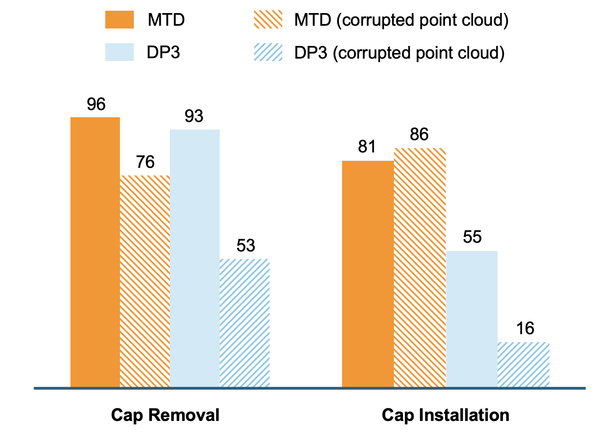

Given a dataset of expert trajectory, standard imitation learning approaches typically learn a direct mapping from observations (e.g., RGB images) to actions. However, such mthods often overlook the rich interplay between different modalities, i.e., sensory inputs, actions, and rewards—which is crucial for modeling robot behavior and understanding task outcomes. In this work, we propose Masked Trajectory Diffusion (MTD), a unified framework for learning from multimodal robot trajectories via masked diffusion model. Given sequences of point clouds, actions, force signals, and rewards, MTD randomly masks out data entries and trains a diffusion model to reconstruct them. This training objective encourages the model to learn temporal and cross-modal dependencies, such as predicting the effects of actions on force or inferring states from partial observations. We evaluate MTD on contact-rich, partially observable manipulation tasks in simulation. We also demonstrate that MTD can simultaneously serve as a planner, a dynamics model, and an anomaly detector with a single model without retraining.
Cap Installation
Cap Removal
Identifying both the timestep and modality of the anomalies.
Visual Distractor
External disturbance
MDF is trained with partially corrupted inputs, which improves its robustness to noisy observations.
